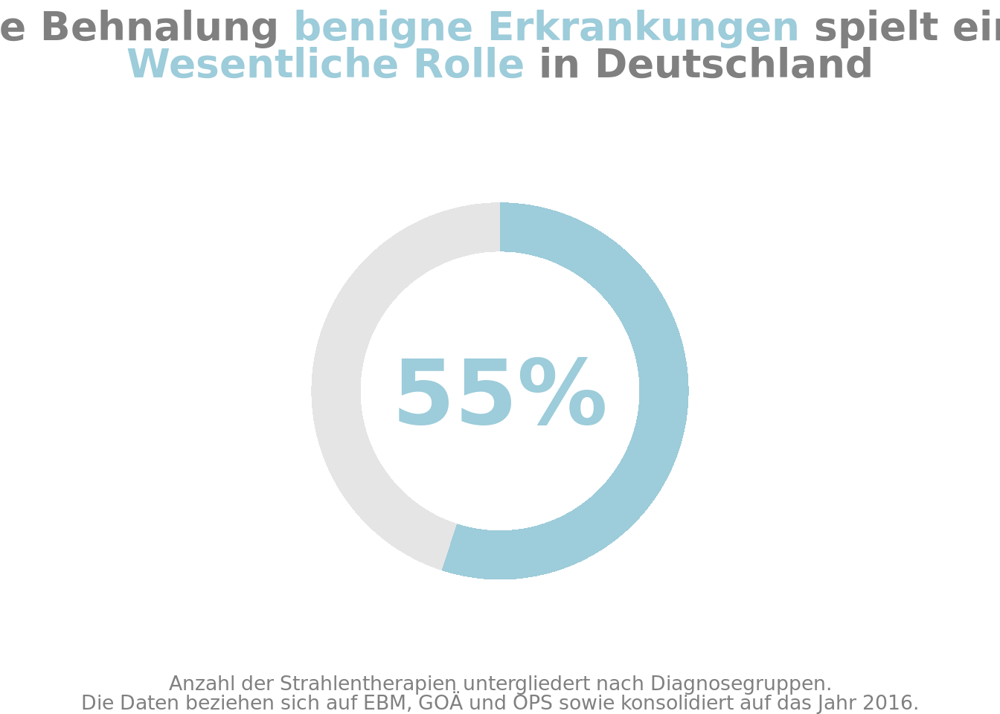

library(ggplot2)
library(dplyr)
Attaching package: 'dplyr'The following objects are masked from 'package:stats':
filter, lagThe following objects are masked from 'package:base':
intersect, setdiff, setequal, unionlibrary(tidyr)
# library(extrafont)
library(scales)
library(ggtext)
ProzBenigne <- 0.55
# Wrangle data to get a data frame in the format we need it in to make our donut chart
ProportionBenigne <- tibble(x = 1, y = ProzBenigne) %>%
mutate(y_negative = 1 - y) %>%
pivot_longer(cols = -x)
highlight_color <- "#9dccda"
font_family <- "Ubuntu"
# Create a nicely formatted big number to go in the donut hole
big_number_text_label <- percent(ProzBenigne, accuracy = 1)
# Create our plot
ggplot(data = ProportionBenigne,
aes(x = x,
y = value,
fill = name)) +
# Add a bar, but don't add the legend
geom_col(show.legend = FALSE) +
# A pie/donut chart is a bar chart with polar coordinates
# Add polar coordinates and set the direction to -1
# so the filled in part starts at the top and goes clockwise
coord_polar(theta = "y",
direction = -1) +
# Set the limits, which is important for adding the hole
xlim(c(-2, 2)) +
# Set a color scale with the highlighted section in whatever color
# is chosen with the highlight_color argument and the rest in a light gray
scale_fill_manual(values = c(highlight_color , "grey90")) +
# Set theme_void() to remove grid lines and everything else from the plot
theme_void() +
# Add the big number in the center of the hole
annotate(geom = "text",
label = big_number_text_label,
family = font_family,
fontface = "bold",
color = highlight_color,
size = 16,
x = -2,
y = 0)+
labs(
title = "<p>Die Behnalung <span style='color:#9dccda'>benigne Erkrankungen</span> spielt eine<br><span style='color:#9dccda'> Wesentliche Rolle</span> in Deutschland</p>",
subtitle = "",
caption = "Anzahl der Strahlentherapien untergliedert nach Diagnosegruppen.<br>Die Daten beziehen sich auf EBM, GOÄ und OPS sowie konsolidiert auf das Jahr 2016."
)+
theme(
plot.title = element_markdown(
hjust=0.5,
family = "Ubuntu",
size = 20,
color = "#808080",
face = "bold",
),
#plot.title.position = "plot",
plot.caption = element_markdown(
family = "Ubuntu",
hjust=0.5,
#vjust=3,
size = 10,
color = "#808080"
),
)